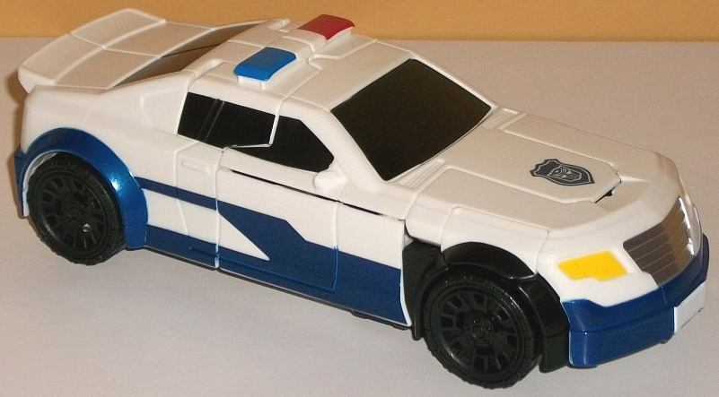
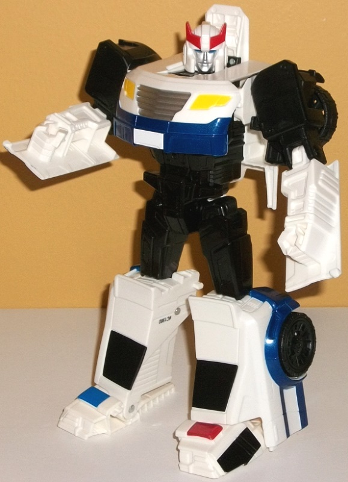

Allegiance
: Autobot
Size
: Cyber Battalion
Difficulty of Transformation
: Easy
Color Scheme
: White, black, dark
metallic blue, and some silver, metallic black, blue, moderately dark metallic
red, and yellow
Rating
: 8.6
Prowl's alternate mode
is, of course, a police car. Given that he's a Cyber Battalion figure,
it's a somewhat large, generic version of the character that leans G1 but
doesn't stay slavishly to that toy in every respect. As far as the proportions
of this mode go, they're all pretty darned solid and realistic-- the sirens
may be a titch undersized, but otherwise everything looks pretty good.
There's no robot mode extras whatsoever in this mode, though the back end
has two rectangular notches near the bottom, as the upper legs fold up
through that section during the transformation. But overall, that's a pretty
minor extra. The mold detailing isn't spectacular or anything, but it does
the job-- all of the necessary details are here, like the windows, door
latches, front grill, rear grill and tailllights, etc. Of course being
a police car named Prowl he takes the usual main plastic color of white,
with some black there as well-- beyond the obvious plastic on the tires,
there's also some on a few connector pieces in this mode and some nice
metallic black paint used on the windows. Oddly, though, the paint apps
on the side windows are kinda off. The paint goes OVER the molded-in separator
in between the two portions of each side window, but stops about halfway
down the second portion of that side window so... yeah, the paint doesn't
match the details, there. The main unique point about this version of Prowl
is the blue-- I mean, Prowl usually has SOME blue, but this one has a LOT.
There's stylized stripes and a thick section of metallic blue all up and
down the bottom of the police car mode-- on the front and back bumpers,
too. It's a really nice shade, and really helps to make the mode look interesting.
An Autobot police symbol is done in this same color in the middle of the
roof, too. As for other, lesser colors, there's some lighter blue and somewhat
dark red paint on the sirens, yellow on the headlights, and silver on the
front bumper. Unfortunately, despite all the mold detailing on the back
end, there's no paint back there beyond the blue on the bumpers.
Prowl's transformation
is pretty straightforward, and about what you'd expect from a Legends-class
figure. The back third or so folds out into the legs, the sides come out
to form the arms, and the hood folds down to form the chest. The end result
is a fairly G1-ish Prowl toy, though without the usual windows behind the
shoulders. He's got his characteristic hood-chest and rear car-legs. (However,
unlike the more slavishly G1 toys of Prowl, the back bumpers are on the
sides of the knees, not used for the feet-- rather, the feet fold out from
the bottom of these pieces and form the sirens and middle portion of the
hood in vehicle mode.) The proportions are quite good, with a fairly wide
chest and shoulders and arms and legs of a decent thickness. That said,
the arms are merely molded into the panels that become the sides of the
car mode, and that's the one real eyesore I see in this mode-- for a figure
as large as a Voyager class toy roughly, I really wish those panels had
folded up somewhere. There's also a bit of the roof behind Prowl's head,
but I consider that a minor eyesore compared to the lower arm panels. The
wheels situated on the back of his shoulders are also a nice touch-- getting
those out of the way and not making them super-obvious, since the shoulders
are black too. In fact most of the robot-specific parts are black, including
the waist, abs, and upper legs. The mold detailing on the robot parts is
pretty decent, with little panel, "bolt", and tech-like details on the
abs, waist, and legs in particular, with a bit on the shoulders as well.
Prowl's head is very well-sculpted-- pretty much exactly his G1 design,
with a round helmet, a two-pronged forehead crest, and a regular face.
There's red paint on the head crest, blue on the eyes, and silver on the
face, and it all looks pretty darned good, though they're the only robot
mode-specific paint apps. Like many Cyber Battalion toys, unfortunately
Prowl has no weaponry. For articulation, he can move at the neck, shoulders
(at two points), elbows, hips (at two points), and knees. This is slightly
limited if you go by a more collector-oriented standard, but since Cyber
Battalion toys are simpler, more "basic" toys of the main TF characters,
it's still pretty decent.
Cyber Battalion Prowl
may not be something to necessarily write home about, but he's still a
pretty good toy. He's solid in terms of his construction; has a great,
proportional vehicle mode; a decent amount of paint; nice proportions in
robot mode that mimic his G1 design without being slavish to it; decent
articulation; and a straightforward transformation, but one that still
accomplishes what it's supposed to. The panels on the lower arms are the
only part of him that really bugs me, as that's just inexcusable on a toy
this size, simplified or not. An easy recommendation for a kids' first
Prowl-- or heck, even if you just want another decent toy of him for your
Prowl collection. One of my favorite molds from the subline.
Review by Beastbot